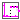
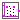

Package of signal source blocks generating clocked simulation time based Boolean signals
This package provides source components akin to the blocks provided in Modelica.Blocks.Sources, but with the difference that they provide a clocked output signal.
As an effect it is not necessary to use an intermediate Sample block if the output signal is connected to a system that requires a clocked input signal. Therefore, it it can be slightly more convenient to use the blocks provided in this package than to use the blocks offered by Modelica.Blocks.Sources (since one does not need to add an additional Sample block for the transition from a continuous time signal to a clocked signal).
Extends from Modelica.Icons.SourcesPackage (Icon for packages containing sources).
| Name | Description |
|---|---|
|  Step | Generate step signal of type Boolean |
|  Pulse | Generate pulse signal of type Boolean |
Generate step signal of type Boolean
The block is similar to the block in Modelica.Blocks.Sources.BooleanStep, but adapted to work in clocked partitions (by internal sampling of the continuous time variable).
The Boolean output y is a step signal:
See model Modelica_Synchronous.Examples.Elementary.BooleanSignals.TimeBasedStep.
Extends from BooleanSignals.Interfaces.PartialClockedSO (Block with clocked single output Boolean signals).
| Name | Description |
|---|---|
| startTime | Time instant of step start [s] |
| startValue | Output before startTime |
| Name | Description |
|---|---|
| y | Connector of clocked, Real output signal |
Generate pulse signal of type Boolean
The block is similar to the block in Modelica.Blocks.Sources.BooleanPulse, but adapted to work in clocked partitions (by internal sampling of the continuous time variable).
The Boolean output y is a pulse signal:

See model Modelica_Synchronous.Examples.Elementary.BooleanSignals.TimeBasedPulse.
Extends from BooleanSignals.Interfaces.PartialClockedSO (Block with clocked single output Boolean signals).
| Name | Description |
|---|---|
| width | Width of pulse in % of period |
| period | Time for one period [s] |
| startTime | Time instant of first pulse [s] |
| Name | Description |
|---|---|
| y | Connector of clocked, Real output signal |